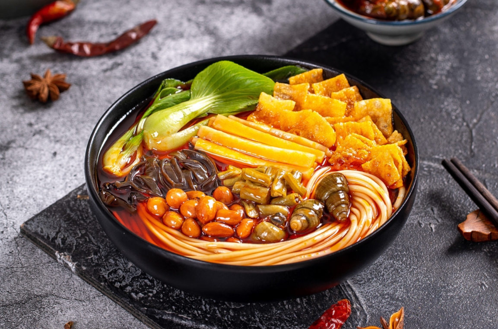
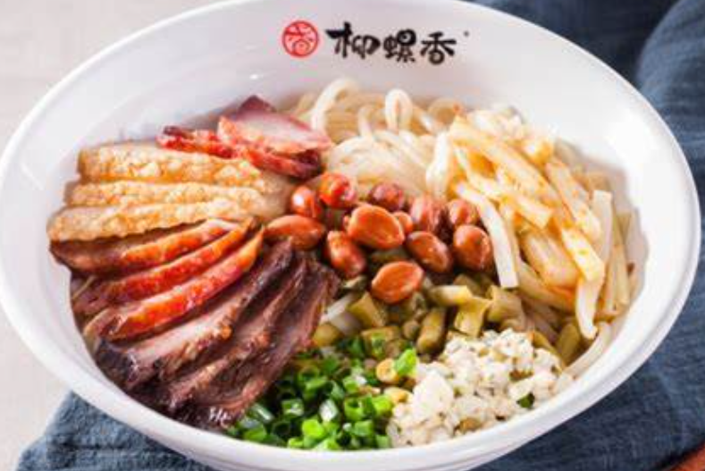
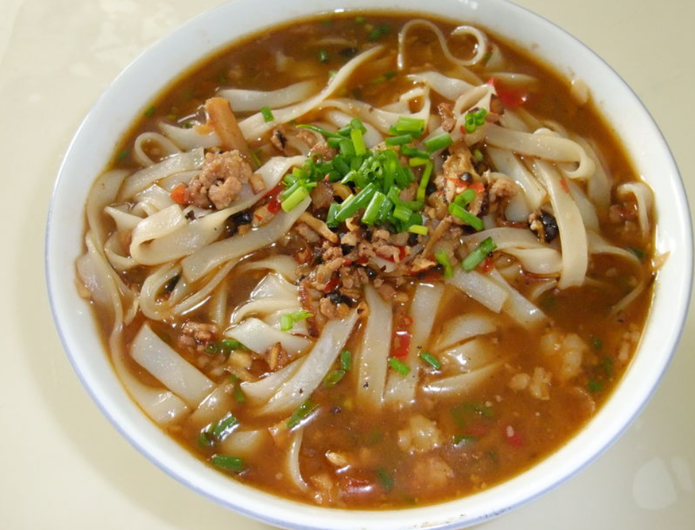

| 螺蛳粉 | 螺蛳粉是广西壮族自治区柳州市的特色小吃，具有辣、爽、鲜、酸、烫的独特风味。它由柳州特有的软滑爽口的米粉，搭配酸笋、木耳、花生、油炸腐竹、黄花菜、鲜嫩青菜等配料，加上浓郁适度的酸辣味和煮烂螺蛳的汤水调合而成。螺蛳粉的味道麻辣鲜香，令人回味无穷。 |
 |
| 卤菜粉 | 老友粉是广西南宁的特色小吃，以酸辣可口、汤料香浓为特点。它由南宁话“老友面”演变而来，以面条、酸笋、豆豉、辣椒等材料制作而成。老友粉以其独特的酸辣口感和浓郁的香味深受人们的喜爱，是南宁的代表性小吃之一。 |  |
| 老友粉 | 桂林卤菜粉是广西桂林市的特色小吃，以卤菜和米粉为主要原料。它由桂林特有的卤水和米粉制作而成，口感鲜美、爽滑，卤菜香浓，是桂林人民日常生活中不可或缺的美食之一。 |  |